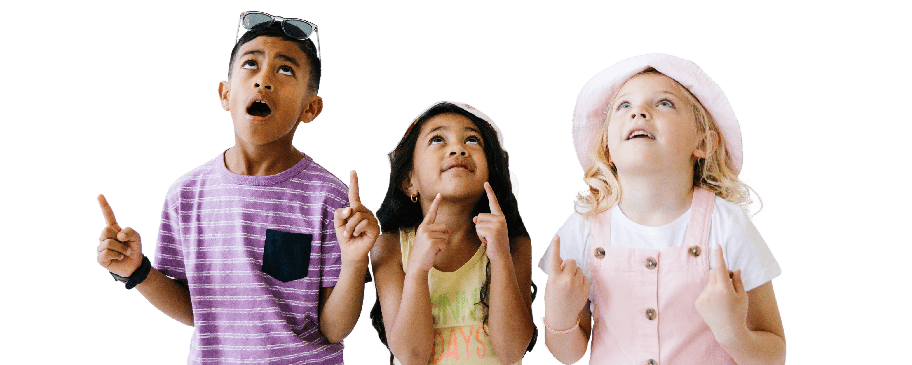

Transformando vidas, un paso a la vez
DiverMind no solo es una herramienta, es un aliado en el desarrollo integral de los niños. Descubre cómo estamos marcando la diferencia.
+95%
Mejora en la comunicación
+80%
Familias satisfechas
+120%
Progreso en habilidades sociales
"DiverMind ha sido una bendición para nuestra familia. Ahora podemos entender mejor las necesidades de nuestro hijo y apoyarlo de manera efectiva."

María González
Madre de un niño con autismo
"Como terapeuta, DiverMind me ha permitido optimizar mi trabajo y ofrecer un seguimiento más personalizado a mis pacientes."

Carlos Martínez
Terapeuta especializado